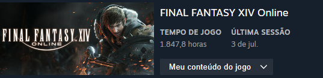

Sou um jovem adulto apaixonado pela série de jogos Final Fantasy
e, em especial, no XIV (14), apaixonado pelo mundo de Eorzea e por
todas as experiências que este jogo proporcinou. Minha jornada
começou há alguns anos e, desde então, tenho explorado cada canto
deste universo incrível, enfrentado desafios épicos e conhecido
pessoas maravilhosas ao longo do caminho, que hoje levo como
grandes amigos.
Minha aventura em Final Fantasy XIV começou durante a expansão
Shadowbringers. Desde o primeiro momento em que
pisei em Eorzea, fui cativado pela riqueza da narrativa, pelo
desenvolvimento dos personagens e pela beleza dos cenários,
principalmente em respeito a trilha sonora, desenvolvida pelo
grandioso compositor Souken. Comecei como um simples aventureiro
em Ul'dah, mas logo me vi envolvido em eventos que moldariam o
destino de todo o reino.
